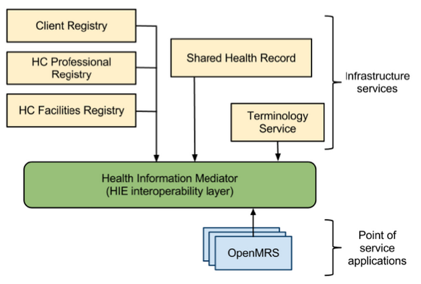

About the Demo
Disclaimer
This is a reference implementation and work in progress. This is an alpha release and is provided as-is.
Browser Requirements
The OpenHIE Web Demo is a demonstration of OpenHIE software components.
This demonstration environment will be reset every night at 23:00 UTC (19:00 EST).
The following diagram explains the various components of a health information exchange implementing OpenHIE recommendations. Links in the left sidebar provide access to integrated demonstrations of these components.

Common Tasks
Below are some common tasks that will be performed in the point of care system.
Registering a patient
- Open the Point of Care, and login.
- Click Find/Create Patient on top bar. Enter patient details.
- You can verify the patient was created by going to the Client Registry and doing an advanced search for the patient.
- You may also check the message in the Interoperability Layer.
Creating an encounter
- In the Point of Care open a previously registered patient, and go to the Form Entry tab.
- Fill out the referral form making sure to choose the location: Musha and provider: John Doctor.
- You can verify the patient and the encounter exists in the Shared Health Record by searching for them and clciking on the visits tab.
- You may also check the message in the Interoperability layer.
Interacting with the demo through APIs
The demo can also be accessed through their APIs. Below are the ports and credentials to provide access for each service.
- Interoperability Layer
- Host: iol.sandbox.ohie.org Port: 5000(SSL), 5001
- Username: admin Password: admin
- Client Registry
- Host: cr.sandbox.ohie.org Port: 8080
- Username: admin Password: admin
- TODO: Instructions for generating session key.
- See: OpenEMPI REST
- Provider Registry
- Facility Registry
- Host: fr.sandbox.ohie.org Port: 80
- Username: demo@ohie.org Password: demo
- See: Resource Map API
- Terminology Service
For support/feedback please email support@ohie.org.